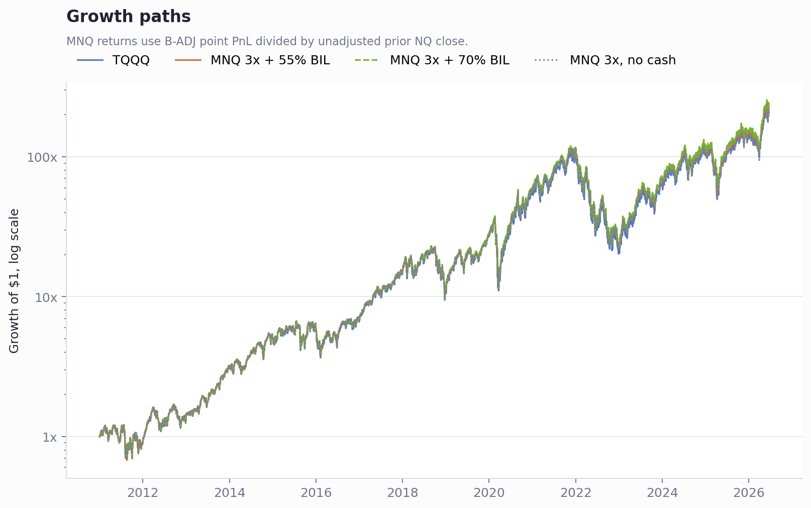
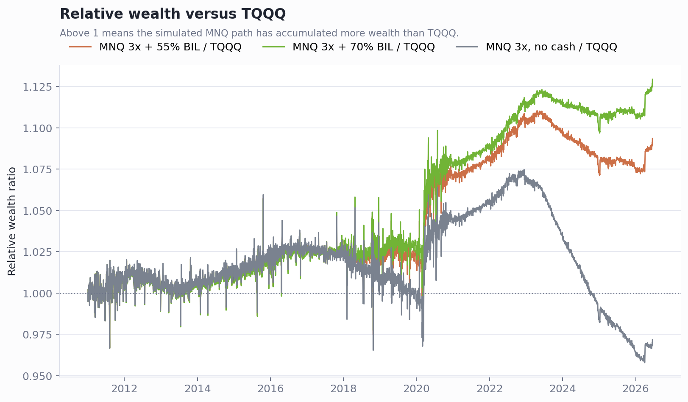
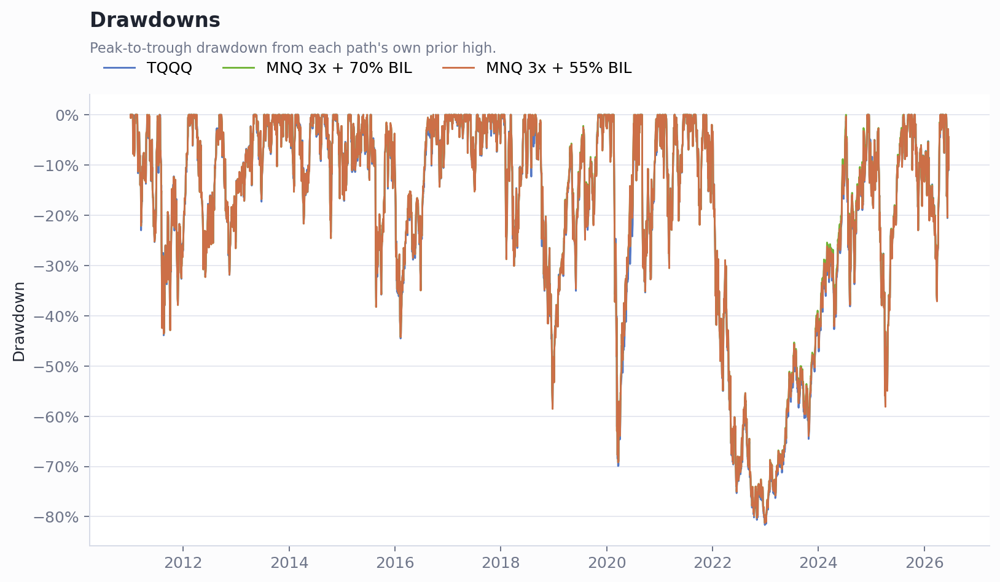

TQQQ 与 MNQ 每日三倍路径比较 - B-ADJ 版
Executive Summary
用更干净的 B-ADJ 点数 PnL 后，MNQ 模拟路径仍明显优于 TQQQ。共同样本为 2011-01-03 到 2026-06-18；TQQQ 最终为 216.10x，MNQ 3x + 55% BIL 为 236.33x，MNQ 3x + 70% BIL 为 244.07x。
这版避免了直接用主连百分比收益带来的换月跳点问题。MNQ 日收益用 3 × ΔB-ADJ close / 非B-ADJ前收，现金部分用 BIL 调整收盘价近似短债收益。
差异仍不是无风险套利。MNQ 70% BIL 与 TQQQ 的日收益相关性为 0.990，年化跟踪误差约 8.6%；它更像自己运营一个期货杠杆账户，而不是购买 TQQQ 产品。
结果汇总
| Metric | TQQQ | MNQ 55% BIL | MNQ 70% BIL | MNQ no cash |
|---|---|---|---|---|
| Final multiple | 216.10x | 236.33x | 244.07x | 210.01x |
| CAGR | 41.6% | 42.4% | 42.7% | 41.3% |
| Annualized vol | 61.4% | 62.0% | 62.0% | 62.0% |
| Max drawdown | -81.7% | -81.3% | -81.2% | -81.4% |
| Sharpe vs BIL | 0.86 | 0.86 | 0.87 | 0.85 |
长期净值路径
MNQ 路径的主要优势来自三个部分：没有 TQQQ 基金内部融资/互换/费用摩擦，短债现金收益可留在账户里，以及期货路径和 ETF 产品路径的实现方式不同。70% BIL 是更接近你现在讨论的 SGOV/cash 实操思路，55% BIL 是较保守的保证金占用口径。

相对 TQQQ 的路径差异
MNQ 70% BIL 相对 TQQQ 的平均年化日收益差为 1.2%，但这个差异是路径型的，换月、保证金、现金管理和实际执行都会影响最终结果。

回撤仍然接近产品级灾难风险
MNQ 路径的最大回撤和 TQQQ 同量级。即使收益更高，也不改变 3x Nasdaq 策略在长熊市里可能出现 70%-80% 级回撤的事实。

近十年年度收益
| year | TQQQ | MNQ 3x + 55% BIL | MNQ 3x + 70% BIL | MNQ 3x, no cash |
|---|---|---|---|---|
| 2017 | 118.1% | 118.2% | 118.4% | 117.3% |
| 2018 | -19.8% | -20.3% | -20.1% | -21.1% |
| 2019 | 133.8% | 135.0% | 135.7% | 132.5% |
| 2020 | 110.1% | 120.3% | 120.5% | 119.8% |
| 2021 | 83.0% | 84.3% | 84.3% | 84.4% |
| 2022 | -79.1% | -78.6% | -78.6% | -78.8% |
| 2023 | 198.0% | 197.1% | 199.3% | 189.4% |
| 2024 | 58.3% | 54.6% | 55.8% | 50.3% |
| 2025 | 34.4% | 34.5% | 35.4% | 31.6% |
| 2026 | 57.4% | 60.1% | 60.5% | 58.7% |
方法说明
- TQQQ 和 BIL 使用 Yahoo 调整收盘价。
- MNQ 使用 TradingView B-ADJ 与非 B-ADJ 综合文件：B-ADJ 用于点数 PnL，非 B-ADJ 用于真实前收分母。
- 本报告没有扣除 MNQ 佣金、滑点、税务、整数合约误差和 IBKR 实际保证金动态变化。
- BIL 是短债收益 proxy；实际用 SGOV 或 T-bills 会有轻微差异。